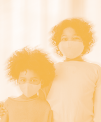

Covid 19's Impact on Historically Excluded Communities

Since the beginning of the pandemic, we have seen more than 1.7 million deaths and over 5 million job losses for people due to Covid-19. But who are the ones who have been the most impacted? Scroll to learn more.